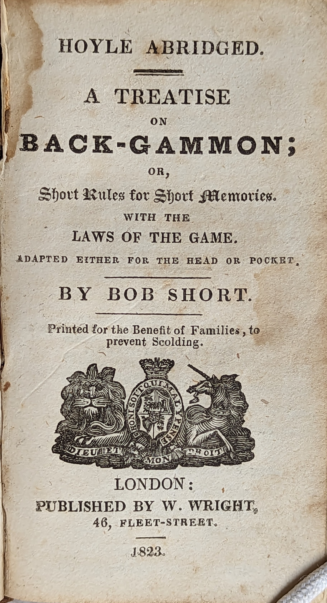

A Descriptive Bibliography of Edmond Hoyle
Copyright © 2014-26 by David Levy
(page updated 2022-10-25)User Guide
Shackell.Backgammon.1823
A Treatise on Backgammon, published by W. Wright, 1823.
 |
Title: | HOYLE ABRIDGED. | [short oxford rule] | A TREATISE | ON | BACK-GAMMON; | OR, | Short Rules for Short Memories. | WITH THE | LAWS OF THE GAME. | ADAPTED EITHER FOR THE HEAD OR POCKET. | [short rule] | BY BOB SHORT. | [short rule] | Printed for the Benefit of Families, to | prevent Scolding. | [printer's device] | LONDON: | PUBLISHED BY W. WRIGHT, | 46, FLEET-STREET. | [short rule] | 1823. |
| Collation: | 10.9 x 6.1: A12 [$4 signed]; 12 leaves, pp. [1–5] 6–23 [24] |
| Label: | [oxford rule] | BOB SHORT'S | Rules for Short Memories | AT THE GAME OF | BACK-GAMMON. | [short rule] | Price Sixpence. | [reverse oxford rule] |
| Contents: | Signature (Page) Reference | Contents | Signature (Page) Reference | Running Titles |
| A1r (1) | title | |||
| A1v (2) | ‘[short rule] | LONDON: | SHACKELL AND ARROWSMITH, JOHNSON'S-| COURT, FLEET-STREET. | [short rule]’ | |||
| A2r (3) | ‘DEDICATION. | [short double rule] | TO THE PUBLIC. | [...] | The Public's | Most humble and obedient Servant, | BOB SHORT. | Stevens's Hotel, January, 1820.’ | |||
| A2v (4) | woodblock | |||
| A3r–A12r (5–23) | ‘A TREATISE | ON | BACK-GAMMON. | [...] | [colophon]’ | |||
| A12v (24) | blank |
| Plates: | on A2v(4) woodblock: Gammon table |
| Publisher: | William Wright |
| Printer: | Shackell and Arrowsmith |
| Price: | 6d. (label) |
| References: | Jessel 1715 |
| Colophon: | ‘LONDON: | Shackell and Arrowsmith, Johnson's-court.’ |
| Copies Seen: | O [Jessel g.243]; Levy [1620] |
| Notes: | The same printer's device and ornament as Stacy.Backgammon.1820, but a different setting of type. |